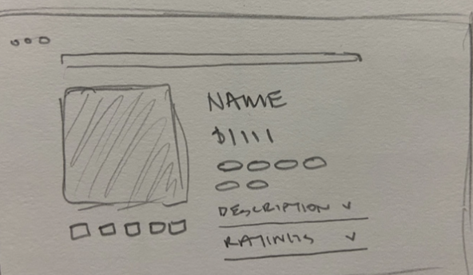
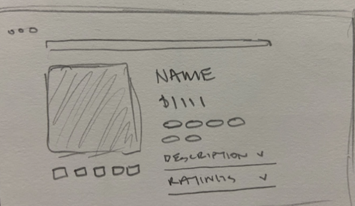
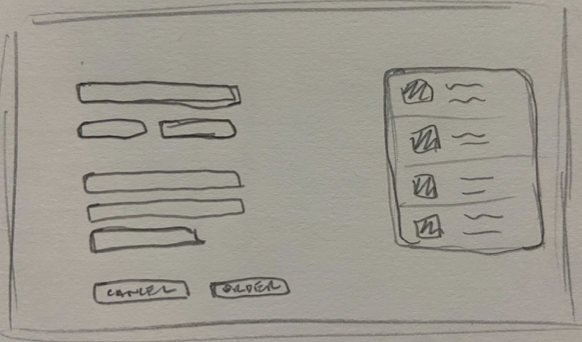
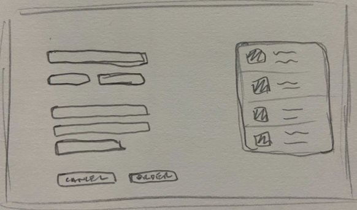
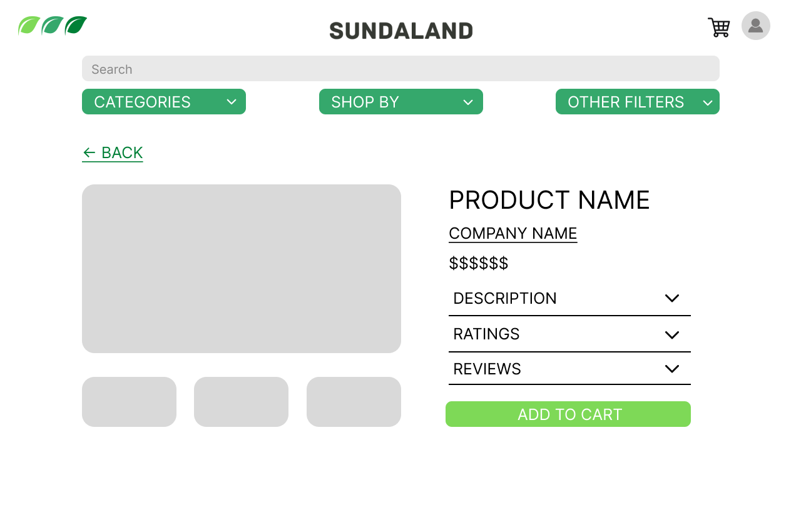
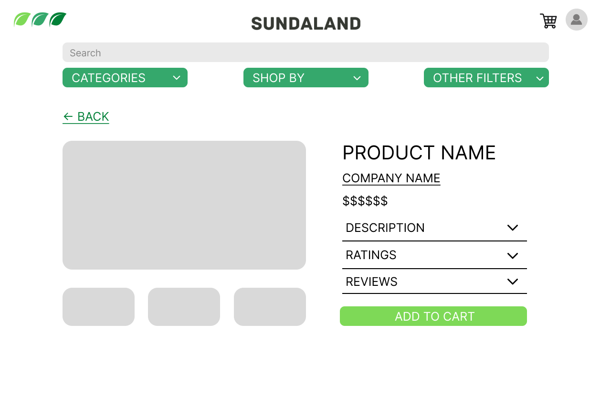
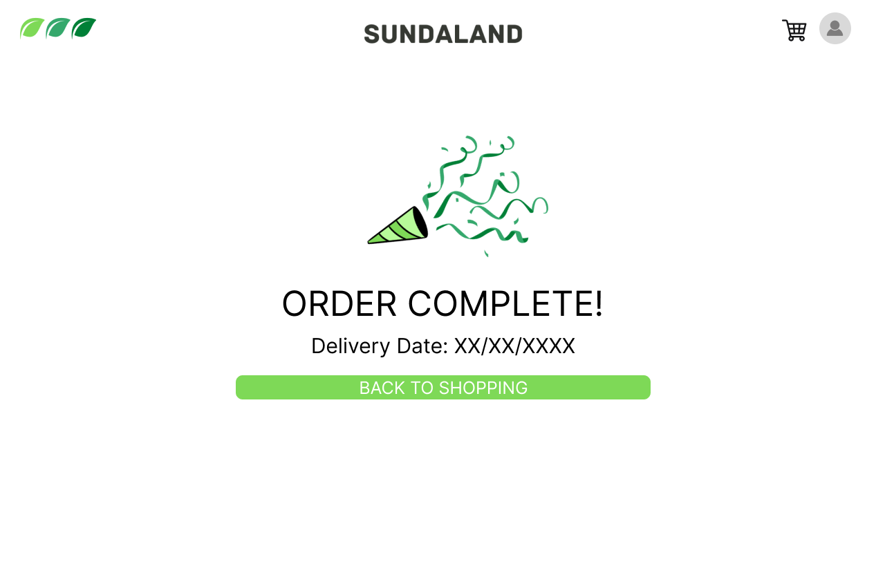
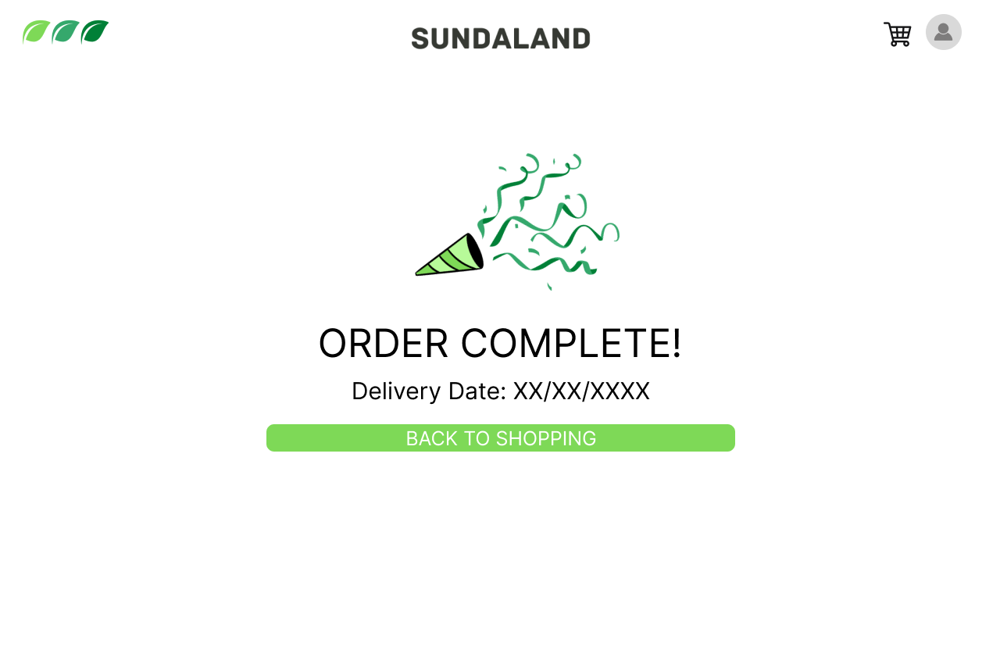
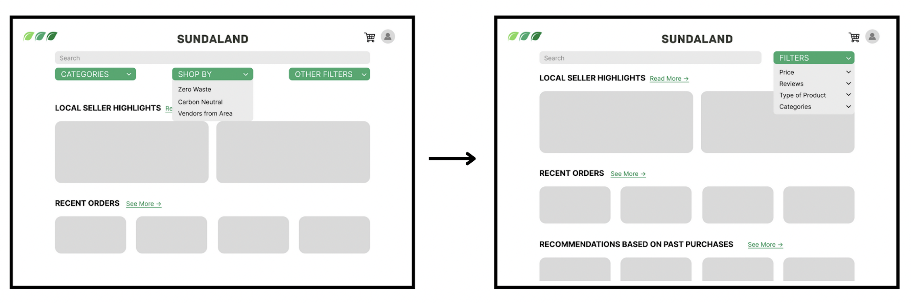
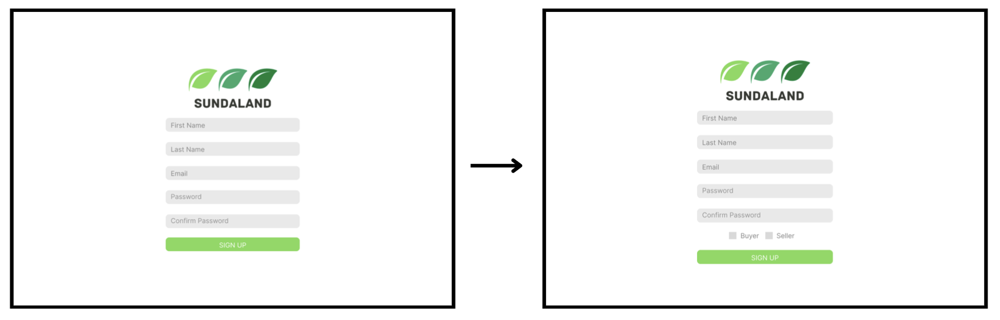

Research
Problem Space
Sundaland’s main mission is to provide another option for consumers which avoids encouraging hyper consumerism and waste while promoting sustainability. Many large corporations today, such as Amazon, run their business on the principle of quantity over quality. While this business model appeals to many people due to its convenience and profitability, it is highly unethical. As many people start to favor online shopping over brick and mortar shops, the influence of these major corporations are taking a toll on small businesses.
I found that there was a lack of ethical alternatives for websites like Amazon, and wanted to fill that void with a business that is just as convenient for consumers. Sundaland’s goal is to reduce today’s society’s reliance on huge corporations by providing a space for smaller businesses to unite and reach more consumers, while also delivering higher quality products, all in a sustainable way.
Key Stakeholders
- Environmentally Conscious Consumers: They are motivated to reduce their carbon footprint, and have already implemented new habits or are willing to learn. They also most likely have a higher income, due to the fact that sustainable products are usually more expensive than other products.
- Sustainable Small Businesses: Sundaland’s business model would also appeal to small businesses who struggle with losing their clients to larger companies. Sundaland prioritizes getting small, local businesses the exposure they need to reach their full potential.
Personas

When making personas for this project, I decided to focus first on the customers stakeholder as this would be easier to be put through user testing due to a larger applicable target market to test.
The first character attribute I decided to focus on with the personas was how sustainably focused they are. I took into account how aware they are of sustainable products, as well as if they currently buy sustainable products or are interested in buying sustainable products. The second character attribute I decided on was to measure how tech savvy they are. This is to measure if they would be familiar with online marketplaces and would be able to use Sundaland easily and efficiently. I was also looking to see if the personas would be willing to learn certain behaviors that would allow them to use the platform. Lastly, the third attribute I decided to use was the amount of budget allocated for online shopping. I wanted to measure how much money the personas had to spend on online marketplaces. If they have a larger budget they would be more likely to spend more money for sustainable products as well.
A limitation of Mackenzie is that she might be hard to attract when Sundaland first launches because of the increased price point. She is set in her routine because she has no time to try something new, but this could be an opportunity for Sundaland to add in some sort of feature that creates an easy transition from other marketplaces.
A large strength of Miranda is that she is part of Sundaland's main target market. When creating the product, I first wanted to make sure that the product was friendly to her, before focusing on accomodating other personas like Mackenzie.
Requirements Gathering
Methodology
To gather data, I used a Google Form asking participants about their online shopping habits and preferences. I found that this method best fit the infomation I wanted to collect, since it allowed me to reach a wide variety of participants, enforce certain answer restrictions, and efficiently record the data.

In order to gain a better understanding of my target market and their needs, I asked questions mainly about Amazon and other major ecommerce websites, focusing on what they liked or disliked, what items were purchased most frequently, and their opinion on sustainability. I first asked questions about participants' shopping habits, and then transitioned to questions more focused on sustainability, as to not lead the participant’s answers to be biased due to the priming effect.
My main goal was to collect data that would allow me to see competitor’s weaknesses and strengths to strategically construct the business model to fill those gaps, while also maintaining and improving upon the elements that participants liked. I also collected data concerning participant demographics, including age, gender, and occupation. This would give insight into who my customer base is and isn’t, which will be crucial in the development of the business model. While most of the responses were from college age students, I was able to generate responses from older demographics as well. The survey generated 45 responses in total.
Results
The survey revealed several important pieces of information that helped guide certain features I decided to include and not include in the initial designs for Sundaland. All of the answers to the survey can be found below:

Going by order of questions in the survey, the first thing I looked at was the different most common online stores people use. All 45 participants shop on the Amazon marketplace. Target and Walmart online marketplaces were also fairly popular, so I decided to complete an analysis of their similar and different features to define the ones that would work best for Sunderland's online marketplace.

I also found that out of all the categories that were surveyed, technology is the most bought category on Amazon marketplace, followed by entertainment, as seen above. However, the majority of the most recent Amazon purchases were kitchen and bathroom items such as a cutting board, snacks, and espresso glasses. This could show that the phrasing of the questions was potentially misleading. This was also a multiple select question, so while technology was the most selected, all participants selected more than one category. I decided to not take these answers into account due to the misleading phrasing and resulting information.
Due to the fact that Amazon is most similar to what Sundaland will be based off of, I decided to ask participants some of their favorite and least favorite features on the Amazon marketplace.
Some of their favorite features included:
- Easy to view the prices for each product on the marketplace
- Fast shipping after ordering
- Recommended tab using past purchases to show other products of interest
- Wish list or “save for later” tab
- Plenty of options for different products
Some of their least favorite features included:
- Ugly website interface, overcrowded and not great color usage, and generally looks kinda tacky
- Returns and address changing pages are not user friendly (is this on purpose?)
- Too many repeats of items
- The recommendations are not actually anything of interest to a user
- Limited filter options

When transitioning to seeing if people would be interested in more sustainable options, I got a positive response for who would be interested in buying more sustainable products. All of the participants scored a 3 or higher on the scale of 1-5 in buying sustainable products. In addition, 69% of participants scored themselves a 4 or higher. This means that there is a lot of interest in the products that Sundaland would offer. However, when asked if one would be willing to pay more for sustainable products, only about 50% of participants scored themselves a 4 or higher, with several people also scoring a 2 out of 5 for interest. Even still, there is decent interest in sustainable products and the price that comes with buying them.
When surveying participants, I tried to get a broad spectrum of responses to the survey. There was a pretty even split of genders, with 53.3% of participants being female and 46.7% of participants being male. There was also a participant age range of 16-56 (the majority were still between 18-22 but there were several responses that represented different age groups perspectives). The sampling process was mainly convenience sampling, which made it hard to get a fully representative sample, but it gave me some valuable insight that I planned to do when developing Sundaland.
Takeaways
I felt that Sundaland filled a gap in the ecommerce market. After analyzing the common online marketplaces, I found that there weren’t many options that focused on accessibility, while also maintaining sustainability. Amazon, which would be Sundaland's main competitor, lacks environmental standards and also usability functions as a result of their business model: quantity over quality. The biggest goal at Sundaland is maintaining high standards of ethical procedure in all aspects paired with a higher quality user experience.
Amazon has some aspects of the web design that are not as user friendly as they could be. One issue that comes with having such a vast variety of products is the task of efficiently sorting and prioritizing them. Many of the participants complained that there were too many products offered on the site and it made it overwhelming to browse without searching for a specific product. I wanted to aim to avoid this strictly functional approach by giving Sundaland's customers better filter and sorting options. Additionally, simply carrying less items would greatly reduce this issue. Another aspect of Amazon that many users dislike is the overall user interface of the website. The participants found the website to be “tacky” and “ugly”. Incorporating more character and stylistic designs into Sundaland’s web interface would not only improve the user’s experience, but could potentially attract a wider variety of demographics who value the website aesthetics.
The biggest challenge was going to be convincing customers to stray from their trusted ecommerce sources. Many people are already very comfortable and familiar with Amazon and other large corporations, making it difficult to present a compelling alternative. Regardless, my team and I were ready to try to develop an idea that would be competitive.
Designs
Design Priorities
- Efficient Process: Current online marketplaces often overwhelm users with useful but not necessary information. Sundaland will work to provide a simple and easy online shopping and selling experience by organizing the information in a clear manner and reducing the different frames a user will navigate through to complete different tasks.
- Engaging Experience: Interactions with the software will entice users and encourage them to continue to return to the marketplace. The visual design of the interface will be clean and easily readable, and the presentation of material will create a pleasant experience.
- Offer Sustainable Services: Sundaland is aimed at becoming a popular online marketplace that uses sustainable practices for its services. For example, doing deliveries using electric vehicles, using compostable packaging, and only offering low waste products in the marketplace.
Drawn Out Designs
The first designs I created were hand drawn. This allowed me to quickly get my ideas on paper so that I didn't forget them without going into too much detail. I took findings from the survey to guide my designs.
 

 

The first priority, efficient processes, is going to be accomplished through the simplified flow through the different pages. I wanted the home page to not overwhelm users when they enter the site. To do this, I wanted only a few pieces of information on the home page, such as recent orders, recommendations for other products, and a search bar. There would be a way to navigate to a user’s profile (either to login or view their profile details once they logged in) and a way to navigate to the cart in the top right corner of the page.
Each local sustainable company will have a “company page”, where users can learn about each company, their missions, sustainable processes, and their top selling products. Each product will also have its own page where users can see specific details about the creation of the product, the materials included, the price, and different customizations of the products. Lastly, the shopping cart will have a quick and easy purchase flow for users to understand.
First Iteration
After getting a base understanding of how I wanted to layout the site, I took my brainstorming to Figma and created low fidelity designs for the website.

 



 

With the first iteration, I shifted focus to the second priority, engaging experience. A few of the survey responses stated that the Amazon interface looked tacky and wasn’t organized. I wanted to make Sundaland’s interface easy on the eyes and easy to understand. I did that by only displaying the most necessary information possible on each page, with additional information behind drop down menus and screen pop-ups. I also planned to use colors that were easy on the eyes, such as blue and green.
I included education into this product because not everyone knows about or understands sustainable products and their importance. By creating individual company pages, I allowed a new way to engage users more and make them care more about and be more conscious of the products they are using.
The third priority is offering sustainable services. The entire basis of Sundaland is providing more sustainable product choices to customers. I wanted to only let local, zero-waste or carbon-net-neutral companies sell their products on the website. In addition, I planned on having different options for shipping, such as carbon negative and carbon neutral.
Testing
Process
When going into the user testing, I brainstormed 7 tasks for the participant to complete in order to see if all interactions in my designs were easy to understand and complete. These tasks included:
- Create a new account and then login
- From the home page, filter out the products being shown to only show the category of bathroom products
- From the search results page, view more details about a specific product, and then find more information about the company that makes that product
- Add the specific product you were viewing to your cart
- View the contents of your cart and remove the last product in your cart
- Place an order with the items in your cart
- View your account profile and sign out
After the user finished the list of tasks, I asked them the following questions for more feedback:
- Were there any tasks that were unclear on how to complete?
- What is one feature you would like to be added to in order to make it more useful for your needs?
- Is this a platform that you would use as opposed to a platform like Amazon?
During user testing, I received mostly positive feedback with a few tweaks to make to the design. To start with the positives, logging in and adding to the cart went well. The white background and pops of bright green were also found to be cohesive and stood out for each user, which led to little difficulty navigating the pages.
However, one of the features that was confusing to users was the filtering. In our user testing, the participants were confused by the filtering buttons, as there are “categories”, “shop by”, and “other filters” options right next to each other. They had a hard time understanding the differences between the options, and it took a few tries to complete the task.
Changes Made
I decided to look at other online marketplaces and saw that they usually combined all their filters under one drop down or side menu, then had several sub categories to further expand within the filters. I chose which filters were most important and reorganized the filters under new group names. Lastly, I moved the drop down to a different location on the screen to be more intuitive.
Users also wanted to see the small business side of Sundaland, so I decided to make that interface for the second iteration. In order to do this, I changed the sign up page to have a distinction for the user of whether they were a buyer or a seller. This would be attached to their login so that they would be brought to the appropriate interface and functionality when logging in.
Final Design
Final Demo
Next Steps
I conducted another round of user testing for the Seller side of Sundaland. This process was very similar to the first round of testing. I got more feedback on the buyer side of the application as well as new feedback on the seller side of the application.
For the buyer side, I got feedback that the ‘add to cart’ function was kind of confusing because there was no confirmation that anything got added to the cart, so I want to add a pop-up confirming the item was added to the cart, as well as a counter by the cart icon showing how many items are in the cart at any given time.
For the seller's side, I got feedback that the ‘edit’ function was a little unclear, so I want to change the display of the edit layout so that it is more clear what users can do by pressing that button. I also want also want to further develop the ‘company stats’ capability so that I can further understand what a user might want to see out of these statistics and how they would want them to be displayed.
After adding these changes to the current designs, I would want to develop these designs into a high fidelity prototype for more user testing, continueing to move towards being able to pass the designs off to developers to build.
Reflection
This project allowed me to explore two of my passion areas: sustainability and user experience design. I got a lot of exposure to UX research and understood how to find out information about my users, competitors, and how to define the direction a product goes in.
I also learned the importance of low fidelity designs. Previously, I had only completed user testing on final, hi-fi prototypes in which everything was added to the designed screens. However, this showed the importance of testing throughout the design process. The processes in my lo-fi designs were intuitive enough for participants to navigate and provide feedback with little guidance. I was able to get valuable feedback before moving forward and adding details to my design.
Overall, this class proved useful in giving me more exposure to the beginning of the UX process by forcing me to go deep into each research step before even moving to the designs. Often I find myself skipping to designs because I really enjoy making them. But, without the research I do previous to making designs, the designs I create may or may not be useful. This taught me to catch myself before jumping ahead in a process, because by skipping steps in the beginning, I could add a lot more work and iterations for myself in the future. When working for a real company, this insight is extremely important on time sensitive projects.